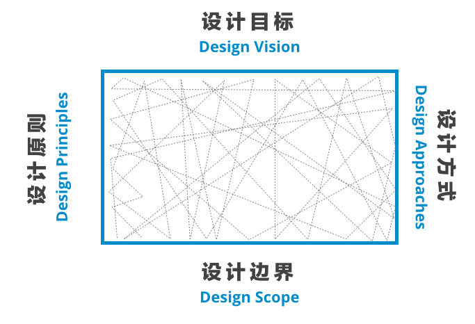
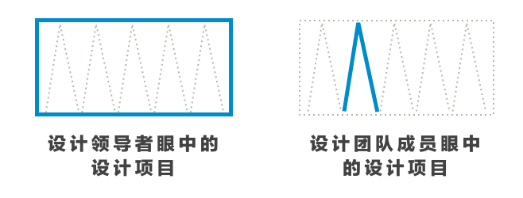
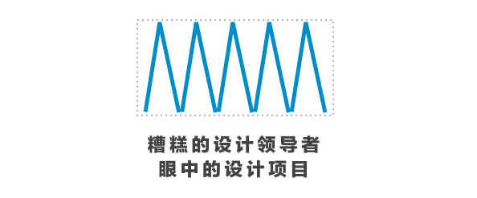

设计已经越来越从件「专业活动」变成了「社会活动」，设计师不单单要和终端用户打交道、跟团队中各种角色的成员打交道、还要跟组织内把设计转化为业务的各种利益相关者打交道，设计领导（Design Leadership）成为设计活动重要的一个环节，设计领导可能包含在以下设计活动中：
- 与终端用户一起共同设计（Co-design）;
- 通过设计研究获得目标消费人群的洞察（Insights）；
- 和不同技能背景的设计师完成设计；
- 与业务和需求方确定设计方向、实现、和未来战略。
在你所经历的设计项目中一定会回想起来一些不好的经历，回想一下领导者，看看他们是否有以下问题，从而思考，一个优秀的设计领导者，在设计项目中都在干什么：
坏领导1：不明确的设计框架（Frame）
一个混乱的设计项目总是包含：所有人不明白为什设计、没有设计原则、无法控制设计边界、不清楚如何达成目标，设计项目在无序和混乱中进行；或者过度关注框架之内的细节，例如使用什么工具、某个不必要的设计细节、进入设计领导者不需要讨论的细节。这种场景下的设计领导者通常有以下特质：
- 不能够把控整个设计项目的目标，为什么做、做什么、怎么做；
- 不能够控制设计过程的底线在哪里，什么该坚持、什么该灵活；
- 不能够控制客户的预期、和团队工作的范围；
- 不能够引导正确的设计方式，最终达到设计目标、坚守原则和边界。
这些特质的背后体现着设计领导者不能够在设计项目的过程中明确框架（Frame），他是设计活动的基础要素。
对于设计领导者而言，设计活动的目的不是「发现问题」、「定义问题」、更不是「解决问题」，而是制造一个大家都认同的框架（Frame）去「发现」、「定义」、和「尝试设计方案」。

这个框架的四边包括：
- 设计的目标（Design Vision）：我们为什么参加这个工作坊？
- 设计的原则（Design Principles）：指导我们做事情的设计原则是什么？例如所有电子化内容之前必须进行至少一次测试；
- 设计的边界（Design Scope）：什么是暂时不去考虑的？
- 设计的方式（Design Approaches）：我们将如何达到设计目标、遵守设计原则、和守住设计边界？
坏领导2：无法驱动全团队
设计领导者对你说：你不需要问这么多，做好你手上的事情，确定方向是我的事情；或者说：你应该做你最擅长的事情。两种表达的含义相同：你做你的，我做我的，你按照我说的做。
设计在发生变化：
- 设计师的技能和背景越来越多元化与融合；
- 设计本身越来越复杂，工程、商业、社会学、持续性、市场、品牌诸多因素需要考虑；
- 因为设计涵盖的范围越来越广使得设计决策者越来越复杂。
这就是设计从工程或者美学问题朝「社会活动（Social Activity）」演化的基础，同时，这个「社会活动」并不是逻辑驱使的线性制造过程、更不是一人说得算的自我表达，它是各种背景的设计师、决策者、利益相关者在一定上下文中共同制造的结果。
更多时候，优秀的设计领导者是交响乐队的指挥（Orchester），懂得揉捏不同技能（和缺陷）的设计师在一起，却背向听众，换句话说，设计团队中最显眼的也许不是一个优秀的指挥者。
坏领导们很少思考一个设计项目如何才能让参与项目的成员获得成长，而是用起长而避其短，他们在项目中的第一件事情总是布置任务，而不是关心每个项目成员的过去、现在、和未来。
坏领导3：错误关注细节和忽视重要细节
细节对于领导者重要吗？不重要，只要它在设定好的框架中；重要，只要它不在设定好的框架中（此点似乎与直觉相反）。坏领导经常犯的错误是在框架内进行「微管理」、却又忽视跳出框架的细节。
时不时站到你的背后告诉你他看出来1px的误差；告诉你用户访谈的问题必须这么问；强制你使用他最熟悉的设计工具。只要这些细节并没有突破设置好的框架：
- 它不会影响我们设计目标的达成；
- 它不会破坏我们制定的设计原则；
- 它并不超越我们的工作范围内；
- 它并不有悖我们的工作方式。
再大的错误也应该交给团队解决，相反，如果突破，再小的错误也应该由领导者指出来，而并不应该指望团队，根本原因是领导者和团队成员看待项目的视角是完全不同的：

我们之所以讨厌一个设计领导，是因为在团队内他什么都要管，面对客户、项目、规划、却变得没有底线和摇摆不定，就是下面的样子。

坏领导4：不做总结和必要的调整
设计是「社会活动」，它关于一群人的共同探索、发现、启发、决策、制作、和验证，而不是一个线性的建造过程，因此领导者建立的框架也并不是恒久不变的。糟糕的设计领导者要么无法清晰设立框架、要么从来不对目标、原则、边界、和方式进行调整，而后者的真正原因其实并不是因为坚持，而是因为：一）接受不了调整带来的成本；二）发现不了调整的需要。
调整的成本非常高，伤害了自己的权威，对未来的管理没有信心；改变了之前的承诺，害怕伤害客户的期待；调整了设计过程，担心团队无法适应。
发现调整的需要也领导者跳出框架去思考框架本身的问题，而过度关注设计本身的设计领导者往往无法兼顾「建造框架」又「打破框架」。
最后的结果通常是两个：
- 坚持错误的路（不改变和无意识）努力走下去，最后的结果是把团队拖入泥潭，改变再无可能；
- 单独进行调整不让团队知道、或让团队强制执行，最后的结果是团队涣散和信任丧失。
真正的设计领导力
坏的设计领导们仰仗经验和权威，希望用一套标准规划的设计过程管理设计师，他们不关心设计师的成长和需要，从不放权，关注不需要他们关注的细节，对于真正越界的问题置若罔闻，对于设计项目的过程从不调整或者回避问题，设计项目陷入无法自拔的困局。
而真正的设计领导力体现在以下四个方面：
- 设定设计目标、原则、边界、和方式；
- 交给团队自组织边界之中的事情，不关注细节，只关注成员的成长；
- 警惕越界的细节问题，及时发现和解决；
- 在框架之外思考和观察变化，强制总结和调整框架。
现在，想想你现在的设计领导者，他们在做什么？他是一个「坏」的设计领导者吗？